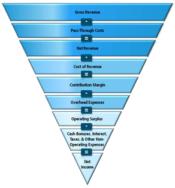
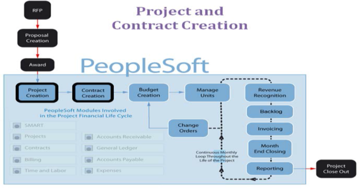

Project Financial
PeopleSoft (PS) Financials is the global financial management tool for QuintilesIMS, which together with standardized processes provide QuintilesIMS with accountable, consistent, visible and comparable financial data. The PeopleSoft enterprise application has been implemented to assist with the management of QuintilesIMS’ project financial information throughout the project life cycle.
This system is based on the unit methodology where unit is defined as the specific task or activity. However, with the new regulatory requirement, we would be shifting to hours based EAC methodology.
This system is based on the unit methodology where unit is defined as the specific task or activity. However, with the new regulatory requirement, we would be shifting to hours based EAC methodology.

About[edit]
1.1. QuintilesIMS’ financial system end-to-end process
The QuintilesIMS Project Management system Life Cycle begins with an award notification and ends with Project Closeout. Project Creation: On receipt of formal award notification a project code is created within PeopleSoft to capture time and expense transactions. Contract Creation: In addition to setting up a project, a contract code is set up in PeopleSoft to manage the rules and specific contract terms as outlined in the signed paper contract. The contract defines the rules and revenue plans, and billing plans
1.2. Tasks, Activities, and ProcessesQuintilesIMS is using nine main modules within the PeopleSoft application suite for project financial management. These include the Services Metric Allocation and Reporting Tool also known as SMART, Projects, Contracts, Billing, Time and Labor, Accounts Receivable, General Ledger, Accounts Payable and Expenses. In their function of Clinical Project Manager, CPMs primarily work with the SMART and billing modules.
The following outlines typical financial tasks and activities in a given project/study.
1.2.1 Budget Creation: The values, quantities and services from the awarded scope of work (SOW) are loaded into SMART by country to create the budget. Within a scope of work, there are a specified number of units to deliver throughout the project financial life cycle. These units are managed monthly to drive revenue, backlog and billing.
1.2.2 Revenue Recognition: Units achieved are used to calculate project revenue on a monthly basis. At the end of each month, Project Managers confirm the number of units achieved and submit this information in SMART for review by Project Finance. CPM Responsibility: SMART module -> Revenue Deliverable Review.
1.2.3 Backlog: The CPM reviews and updates the Backlog to determine true operational expectations for each country and each deliverable. It covers the number of future units expected to be delivered per customer contract and is phased through the life of the activity on the project CPM Responsibility: Backlog Module -> Backlog Phasing Tool.
1.2.4 Invoicing: Invoices are generated and distributed to customers based on achievement of the terms described in the payment schedule. Project Managers review and approve all data, including labor, expenses and investigator grants prior to the production of the customer invoice. CPM Responsibility: SMART module -> Billing Unit Review and/or Billing module -> Billing Worksheet.
1.2.5 Month End Closing: A financial process which provides a monthly snapshot of a project’s financial performance.
1.2.6 Reporting: Weekly and monthly project reports are generated to view project status and financial performance globally. Furthermore, the accumulation of individual project financial performance information provides senior management with the overall corporate financial performance. There are also operational and control reports available to assist with the management of the business.
1.2.7 Change Orders: Change Orders result from a need to modify an existing scope of work. These changes can occur throughout the project financial life cycle. Any change order results in the creation of a revised budget within SMART.
1.2.8 Project Close Out: Upon completion of all activities on the project, deliverables achieved are reconciled against the scope of work. This ensures that all possible revenue has been recognized and all activities have been invoiced to the customer. Once the reconciliation process is complete, the project and contract are closed to any further project transactions.
1.3 Oracle Analytics
Oracle Business Intelligence (aka Analytics) provides enhanced reporting and analytics experience. Views of data start at top level, and then drill down when needed Easier access for all users to the same underlying data Ability to slice and dice data using ad-hoc reporting experience (as opposed to current reporting platform that is flat and rigid) Dashboards and reports can be customized for different user groups.
1.4 Purchase order (PO)PO is a commercial document and first official offer issued by a buyer to a seller, indicating types, quantities, and agreed prices for products or services.
See also[edit]
References[edit]
• Project Financials• Revenue & Backlog
• Invoicing/Expenses
• Learning Curve: Financial Fundamentals I: Quintiles Financial Overview
• Learning Curve: EAC 201
• eSOP: Project Finance
Tools[edit]
• PeopleSoft Financials• PeopleSoft Financials Reports
• Oracle Business Intelligence